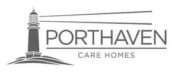

Trade Mark Journal No.2025/037 12 September 2025
UK00004257658 1 September 2025 (41,43,44)

- Class 41
- Education; providing of training; arranging and conducting entertainment activities; entertainment and recreational services for the elderly, people with physical or mental disabilities, people with learning difficulties and people with mental health issues; arranging for the provision of recreational facilities; organisation of group recreational activities and events.
- Class 43
- Services for providing food and drink; temporary accommodation; residential home services; restaurant, bar and catering services; retirement home services; provision of temporary accommodation for the elderly, people with physical or mental disabilities, people with learning difficulties and people with mental health difficulties; catering services for residential homes; catering services for the supply of meals; arranging for the provision of meals; advice, information and consultancy services for all of the aforementioned services.
- Class 44
- Nursing homes; rest homes; convalescent homes; provision of nursing care; provision of home care services; provision of day care services for the elderly; provision of respite care; nursing home services; provision of mental health care; health care services; medical services; dementia care services; hygienic and beauty care for human beings; dentistry services; provision of care to the elderly, people with physical or mental disabilities, people with learning difficulties and people with mental health issues; hospital nursing home services; rest home services; nursing care services, convalescent home services; operation of hospices; medical and palliative care services; medical nursing services; health care; domiciliary nursing and health care; the provision of health care services in nursing homes, rest homes and convalescent homes; provision of health care services in domestic homes; advice in relation to the personal welfare (health) of the elderly, people with physical or mental disabilities, people with learning difficulties and people with mental health issues; pharmacy advice; medical treatment services; conducting medical examinations; compilation of medical reports; therapeutic treatment services; health clinic services; homeopathic clinical services; arranging of medical and surgical treatment; medical and surgical diagnostic services; physiotherapy services; counselling for the psychological treatment of medical ailments; dietetic counselling services; behavioural analysis for medical purposes; monitoring of patients; health screening services; medical health and fitness assessment services; health and medical information services; exercise facilities for health rehabilitation purposes; health hydro services; advice, information and consultancy services for all of the aforesaid services.
Porthaven Management Limited
Representative: Groom Wilkes & Wright LLP